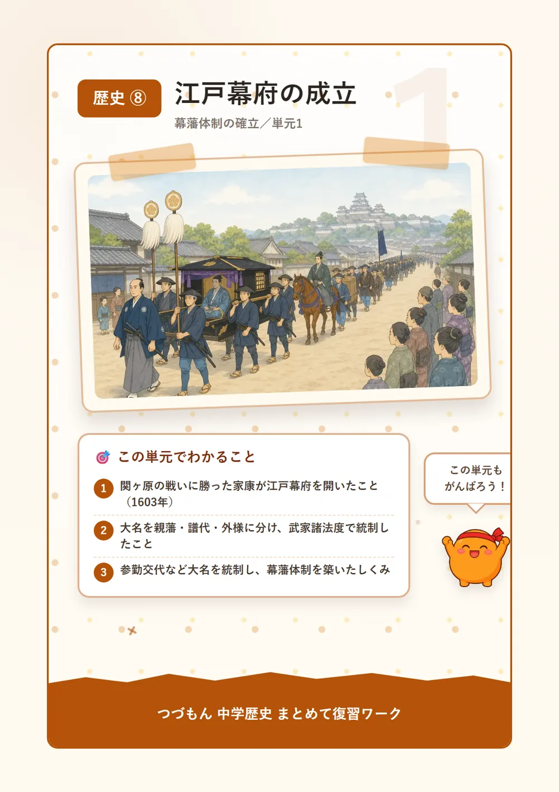
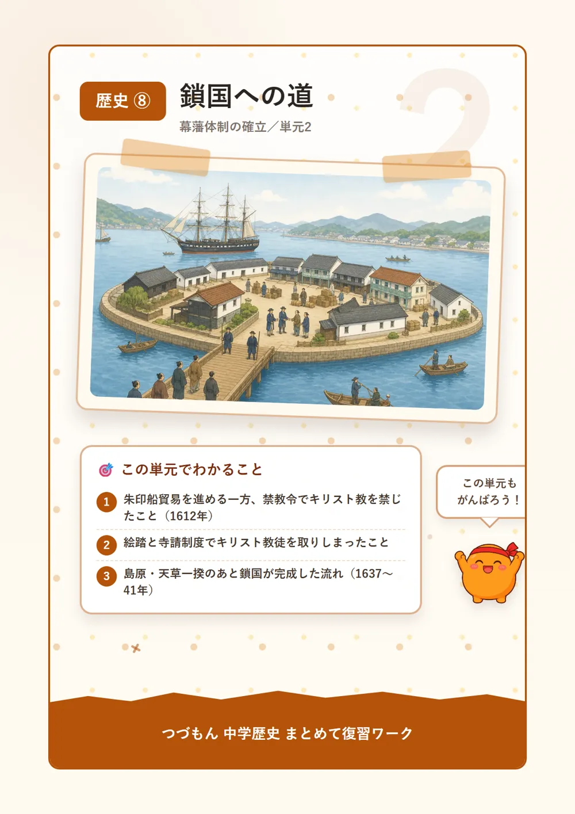
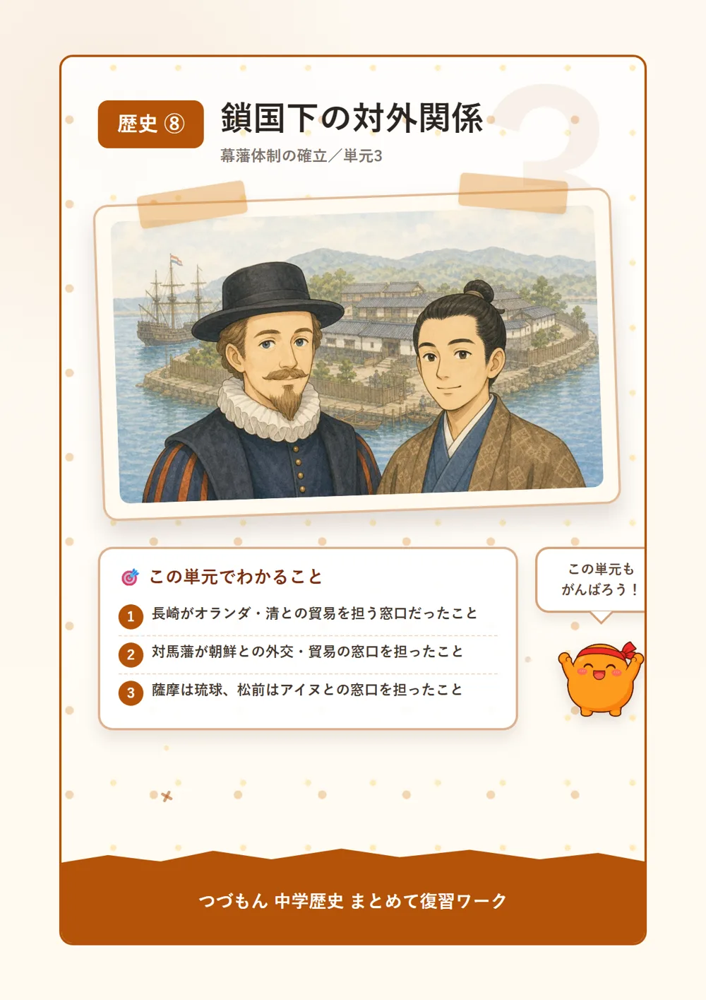
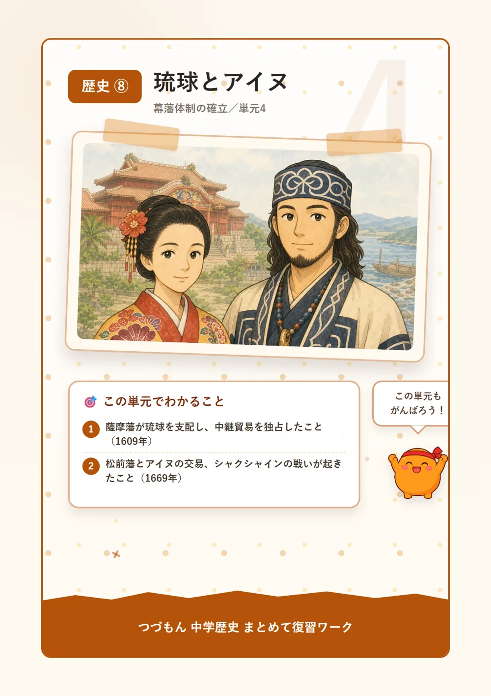
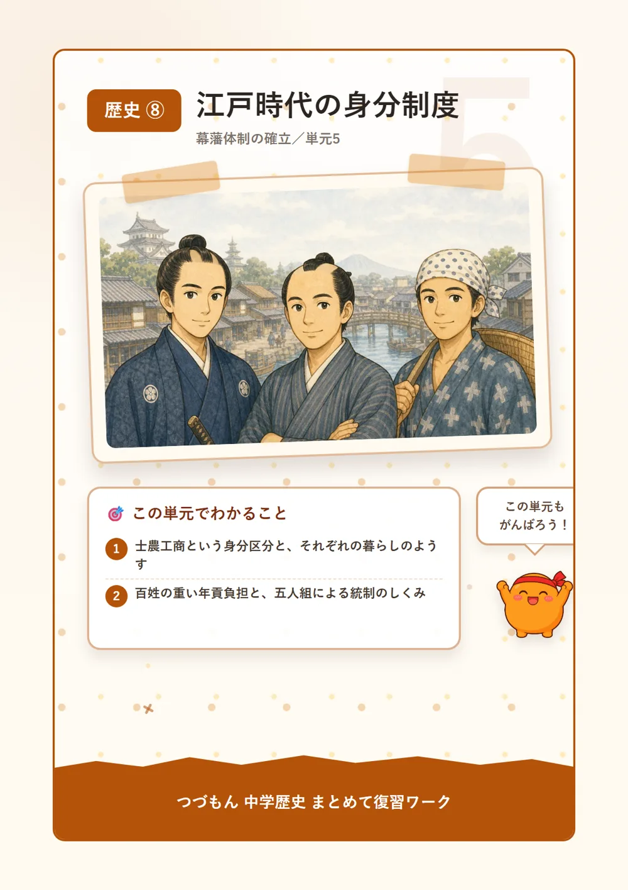
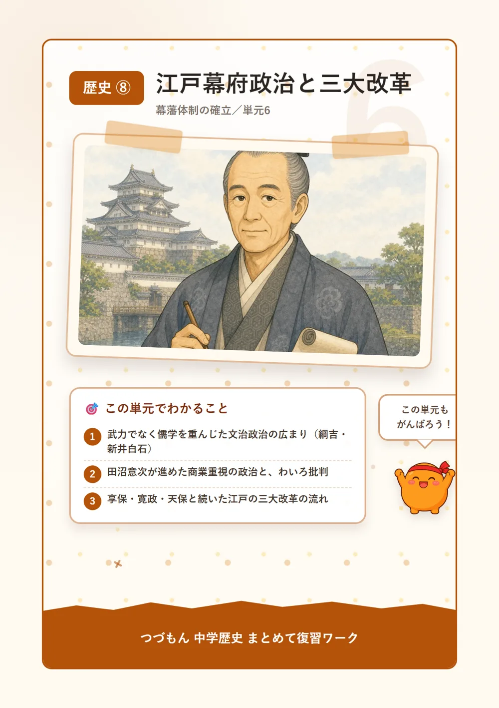
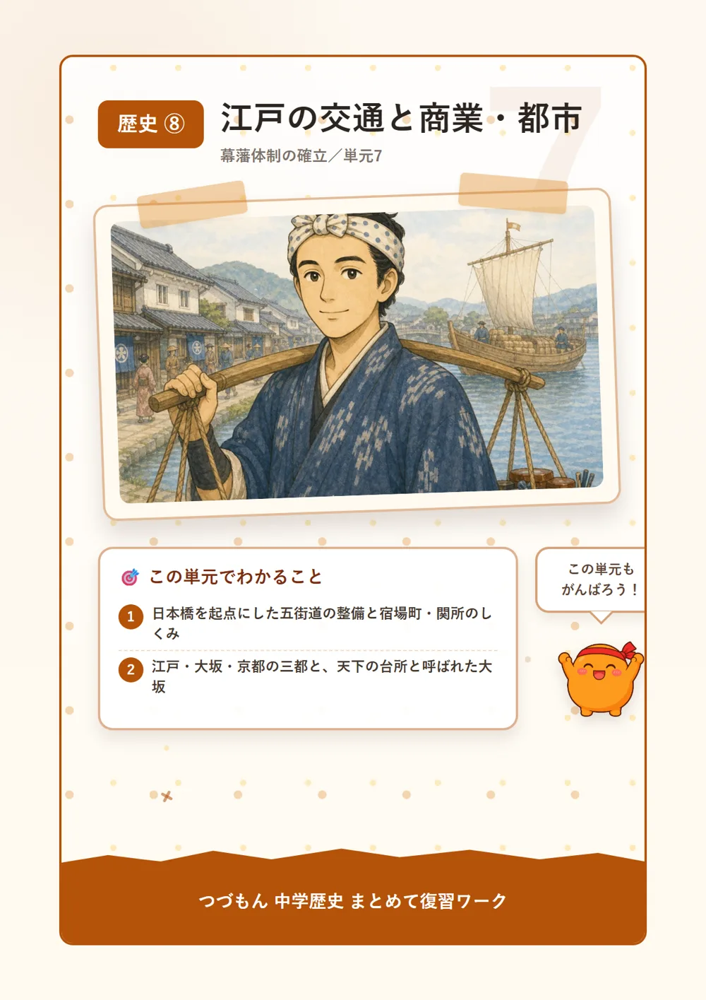
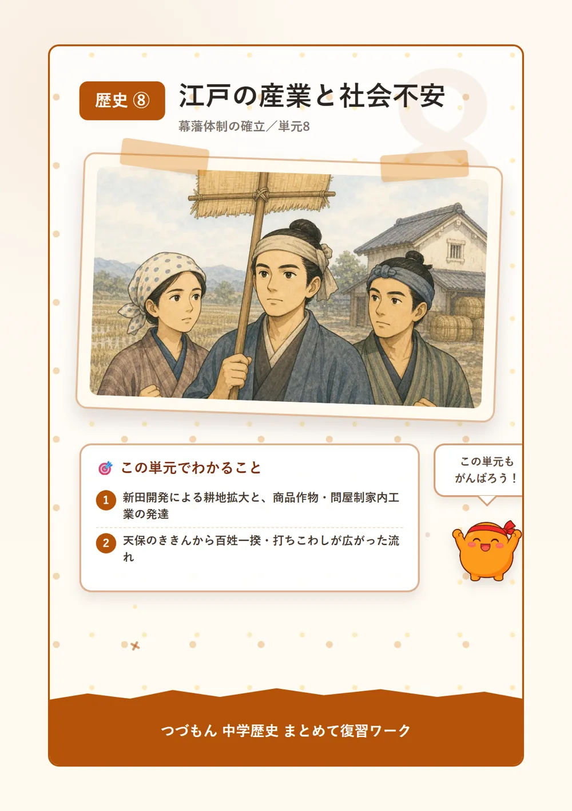
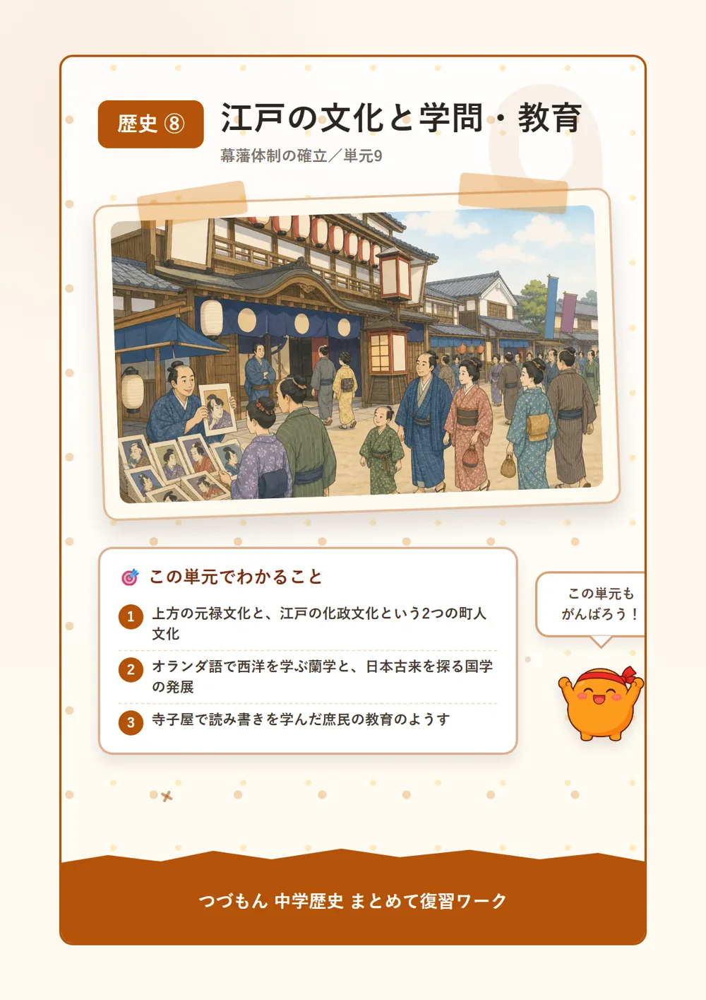

幕藩体制の確立
 いっしょに
いっしょに読もう！
江戸幕府の成立

1関ヶ原の戦いと江戸幕府の成立
1600年、徳川家康は石田三成らが率いる西軍を、天下分け目と呼ばれる関ヶ原の戦いで破って、全国支配の実権を握ったんだ。そして1603年には朝廷から征夷大将軍に任命されて、江戸に幕府を開いたよ。これが江戸幕府の始まりで、以後15代将軍慶喜まで、約260年も続く武家政権のスタートになったんだね。1614年から1615年にかけての大坂の陣では、対立していた豊臣氏を攻め滅ぼして、徳川氏による支配をゆるぎないものにしたんだ。
2大名の統制のしくみ
将軍から1万石以上の領地をもらった武士のことを大名と呼ぶよ。大名は徳川家との関係によって、徳川家の親族である親藩、関ヶ原の戦い以前から従っていた譜代大名、関ヶ原の前後に従った外様大名の3つに分けられたんだ。外様大名は幕府に警戒されて、江戸から遠い地に置かれることが多かったんだよ。1615年には、大名を取りしまるための法である武家諸法度が定められて、城を勝手に修理したり大名どうしが結婚したりすることも制限されたんだ。
3参勤交代と幕藩体制
3代将軍徳川家光の時代には、武家諸法度の改定によって参勤交代が制度としてスタートしたんだ。これは大名に江戸と自分の領地を1年おきに行き来させて、江戸には妻子をずっと住まわせておく制度だよ。往復や江戸屋敷の維持にたくさんの費用がかかるから、大名の財政を圧迫して、幕府に逆らう力を弱める効果もあったんだね。こうして幕府が全国の大名(藩)を統制して、藩がそれぞれの領地を治める幕藩体制が確立し、江戸時代の政治の土台になったんだ。

鎖国への道

1朱印船貿易と禁教令
江戸時代の初め、幕府は朱印状を与えた船に東南アジアとの貿易をさせる朱印船貿易を奨励していて、タイのアユタヤなど各地に日本人が住む日本町も生まれたんだ。ところが1612年、徳川家康は幕領に対して禁教令を出して、キリスト教の信仰を禁じてしまうんだ。信者どうしの結びつきが強まって幕府の支配がゆらぐことを恐れたからで、翌年には禁教令が全国に広げられたよ。
2絵踏と寺請制度による取りしまり
幕府はキリスト教徒を見つけ出すために、キリストや聖母マリアの絵を踏ませる絵踏を行ったんだ。それに加えて、すべての人を必ずどこかの寺院に所属(檀家)させて、キリスト教徒でないことを証明させる寺請制度も整えたよ。この寺請制度は、人々を寺院に登録させて信仰を確認する宗門改とあわせて運用されて、幕府が国民の信仰を管理するしくみになっていったんだね。
3島原・天草一揆と鎖国の完成
1637年、重い年貢とキリスト教弾圧に苦しんだ人々は、少年天草四郎を大将として島原・天草一揆を起こしたんだ。幕府はこれを鎮圧すると、禁教をいっそう強めていったよ。1639年には布教と結びついていたポルトガル船の来航を禁止して、1641年にはオランダ商館を長崎の出島に移し、3代将軍徳川家光のもとで鎖国が完成したんだ。でも完全に交流を断ったわけではなくて、長崎・対馬・薩摩・松前の四つの窓口を通じた交流は続いていたんだよ。
鎖国下の対外関係

1長崎の窓口―オランダと清
鎖国の間でも、長崎ではオランダが貿易を許されていたんだ。オランダはキリスト教の布教を行わず貿易だけに徹していたから幕府から信頼されて、出島に商館を置き、オランダ風説書で海外の情勢を幕府に伝えていたよ。同じ長崎には1689年に唐人屋敷が造られて、清の商人が住んで貿易を行っていたんだ。長崎貿易では、金銀が海外に流れ出るのを防ぐために、銀の代わりに干しなまこなどの俵物と呼ばれる海産物も輸出されたんだよ。
2対馬と朝鮮との交流
朝鮮とは対馬藩が窓口になって、朝鮮の釜山に設けた倭館で貿易や外交の実務を行っていたんだ。将軍の代替わりのたびに、朝鮮から朝鮮通信使が江戸を訪れて、両国の友好を示すとともに各地で文化の交流も行われたんだよ。
3薩摩と松前の窓口
琉球とは薩摩藩が窓口となり、蝦夷地のアイヌとは松前藩が窓口となっていたんだ。このように、鎖国の間も日本は長崎・対馬・薩摩・松前という四つの窓口を通じて海外や国内の異なる地域と交流を続けていて、完全に国を閉ざしていたわけではなかったんだよ。
琉球とアイヌ

1薩摩藩による琉球支配
1609年、島津氏の薩摩藩は琉球王国に武力で攻め込んで、支配下に置いたんだ。でも薩摩藩は琉球を独立国の形のまま残しておいて、中国の品を日本へ送る中継貿易の利益をしっかり独占したんだよ。琉球国王や将軍の代替わりには、薩摩藩を通じて琉球使節が江戸へ送られて、幕府の権威を国内外に示す役割も果たしていたんだね。
2アイヌとの交易とシャクシャインの戦い
北海道など蝦夷地に住むアイヌ民族との交易は松前藩が独占していて、鮭・昆布・毛皮などを手に入れていたんだ。でも不公平な交易条件がアイヌの人々の生活を圧迫したことから、1669年、アイヌの首長シャクシャインが松前藩に対して立ち上がったんだよ。この戦いは鎮圧されてしまい、そのあとアイヌの人々に対する松前藩の支配はいっそう強まっていったんだね。
江戸時代の身分制度

1士農工商と身分ごとの暮らし
江戸時代の身分は大まかに士農工商と呼ばれる区分で分けられていたんだ。名字・帯刀の特権を持つ武士は全人口の約7%しかいなかったけれど、政治や軍事を独占して支配階級になっていたよ。人口の約85%を占めた百姓は村に住んで年貢を納め、都市に住み商工業を営む町人も税を負担していたんだ。このほかに、えた・ひにんという不当な差別を受けた身分もあったんだよ。
2百姓の負担と村のしくみ
百姓は収穫の5割を領主に納める五公五民のような重い年貢を負わされることもあって、土地を持つ本百姓と、土地を持たず小作を行う水のみ百姓に分かれていたんだ。百姓は5戸を1組にまとめて年貢納入や犯罪防止の連帯責任を負わせる五人組によって統制されていて、負担に耐えかねた百姓が集団で行動する百姓一揆も各地で起こったんだよ。
江戸幕府政治と三大改革

1文治政治と元禄期の政治
戦乱が終わった江戸前期には、武力ではなく儒学や法を重んじる文治政治が進められるようになったんだ。5代将軍徳川綱吉は儒学の一派である朱子学を重視して文治政治を進めて、生類憐みの令を出したことでも知られているよ。6代・7代将軍に仕えた新井白石は、貨幣の質を戻して長崎貿易を制限し、金銀が海外へ流れ出るのを防ごうとする正徳の治を行ったんだ。
2田沼意次の政治と批判
老中田沼意次は、商人の同業者組合である株仲間を奨励するなど、商業の力を利用して幕府の収入を増やそうとしたんだ。でも、商人と役人の結びつきが強まってわいろが横行してしまったことから、田沼の政治は厳しく批判されるようになったんだよ。
3江戸の三大改革
その後、8代将軍徳川吉宗による享保の改革、老中松平定信による寛政の改革、老中水野忠邦による天保の改革という、江戸の三大改革が行われたんだ。いずれも幕府財政の立て直しや社会の引きしめをめざした改革で、享保・寛政・天保の順に行われたんだよ。
江戸の交通と商業・都市

1五街道と宿場町
幕府は江戸の日本橋を起点に、東海道など五つの主要道路をまとめた五街道を整備したんだ。街道沿いには、旅人や大名行列が休んだり泊まったりする宿場町が発達して、人や物の通行を取りしまる関所も置かれ、江戸へ武器が持ち込まれることなどを警戒していたよ。手紙や荷物を運ぶ飛脚のしくみも発達して、情報や物資のやり取りを支えたんだね。
2三都の繁栄と大坂の役割
江戸・大坂・京都は三都と呼ばれていて、江戸は政治、京都は文化、大坂は商業の中心として栄えたんだ。大坂には諸藩が蔵屋敷を置いて年貢米や特産物を集めたことから、「天下の台所」と呼ばれるようになったんだよ。商業の発展にともなって、金貨と銀貨を交換する両替商も活躍し、貨幣経済のしくみが整えられていったんだね。
江戸の産業と社会不安

1新田開発と商品作物
幕府や藩は年貢収入を増やすために、干拓や用水路の整備を進めて新田開発を行い、耕地面積を大きく広げていったんだ。農村では木綿や菜種など、売って現金収入を得るための商品作物の栽培が広がって、いわしを干して作った肥料である干鰯も広く使われるようになったよ。問屋が農家に原料や道具を貸して製品を作らせる問屋制家内工業も発達して、佐渡金山などの鉱山とともに、幕府や藩の財政を支えたんだね。
2ききんと百姓一揆・打ちこわし
江戸後期には冷害によるききんが相次いだんだ。1782年ごろから始まった天明のききんは田沼意次への批判を強めて、1830年代の天保のききんは米価の上昇と社会不安を引き起こしたよ。農民が年貢の軽減を求めて起こす百姓一揆や、都市の民衆が米を買いしめた商人を襲う打ちこわしが増えていって、1837年には大坂で元役人の大塩平八郎が反乱を起こすまでになったんだ。
江戸の文化と学問・教育

1元禄文化と化政文化
17世紀後半、大坂や京都などの上方を中心に町人が担う元禄文化が栄えて、俳諧を芸術に高めた松尾芭蕉や、人形浄瑠璃の脚本を書いた近松門左衛門らが活躍したんだ。19世紀前半になると、江戸を中心に庶民文化である化政文化が広がって、葛飾北斎や歌川広重による風景画の浮世絵が人気を集めたんだよ。
2蘭学・国学の発展
学問では、幕府が重んじた儒学の一派である朱子学のほかに、オランダ語を通じて西洋の医学や科学を学ぶ蘭学、日本古来の考え方を明らかにしようとする国学が発展したんだ。杉田玄白らは1774年に西洋医学書「解体新書」を出版して、蘭学発展の基礎を築いたんだよ。
3庶民の教育
庶民の子どもは寺子屋で読み書きやそろばんを学んでいて、僧侶や浪人などが教師を務めていたんだ。こうした教育の広がりが、江戸時代の庶民の生活水準や識字率の高さを支える土台になったんだよ。